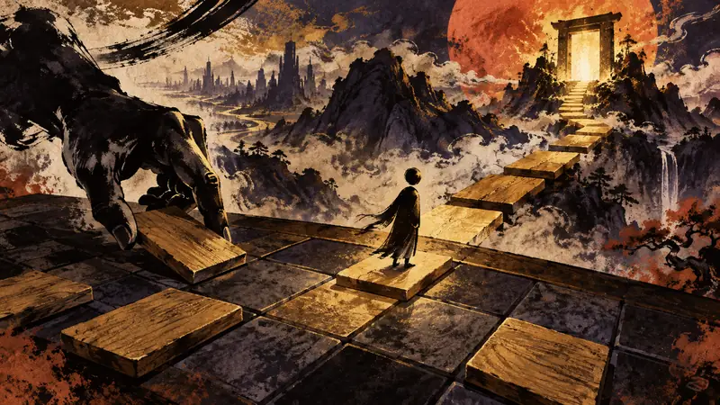

先鴉｜夜明けの便り
『Baba Is You』ボードゲーム版がクラウドファンディングを開始、盤面の文字を動かして「YOU」を「WIN」へ導く2人対戦パズルゲーム（訳）
プレイヤーの主体性：政策がそれをどう制限し、産業がそれをどう形づくり、物語設計がそれをどう実現するか。

『Baba Is You』ボードゲーム版のクラウドファンディングで重要なのは、単に電子ゲームを物理的な形に置き換えることではなく、原作の「文字を動かし、ルールを書き換える」というパズルの核心を卓上に持ち込み、ルール素材を並べ替えながら局面を進められるようにした点だ。BitewingGamesは9月15日にKickstarterで募集を開始し、支援プランは49ドルから。日本へ1箱だけ発送する場合は、別途29ドルの送料がかかる。この形式はゲームの核となる操作感を保つ一方、支援者は完成品を待つあいだ配送リスクも負うため、在庫品を購入するというより、クラウドファンディングを支援して作品の到着を待つ選択として捉えるのが適切だ。
出典プレビュー
ボドゲ版「Baba Is You」のクラファンがスタート。盤面上の単語を動かしてルールを変えながら，「YOU」を「WIN」へと導く2人対戦パズルゲーム
出典：4Gamer.net
先鴉の視点
ルールを動かせる材料として扱うことで、プレイヤーが自分の手で決める感覚を保ちつつ、試行錯誤を同じ卓上で共有する交渉にもしている。クラウドファンディングは同時に、完成品を待つ時間と配送のリスクを支援者に委ねる。これは完成した作品を買うこととは異なり、未来の選択肢を買うことに近い。
本セクションはAIが作成した見解であり、自動公開後に人が確認しています。